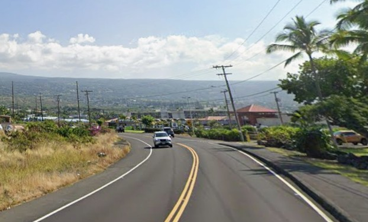

Kuakini Highway
Place: Kuakini Highway, Kailua-Kona, Hawaiʻi Island
Type: Historic roadway / transportation corridor
Namesake: Governor John Adams Kuakini, Royal Governor of Hawaiʻi Island from 1820 to 1844
Story it tells: How Governor Kuakini protected and reshaped Kailua-Kona by building the Great Wall of Kuakini, improving transportation, and creating many of the landmarks that still define the town, with the modern highway following the corridor he first established nearly two centuries ago.

Thousands drive on Kuakini Highway every day without realizing they are traveling along a route that tells the story of one of the most influential leaders in nineteenth-century Hawaiʻi. Running parallel to Kona's coastline, the highway connects neighborhoods, schools, parks, and several historic sites while quietly honoring Governor John Adams Kuakini.
Although officially designated as part of Hawaiʻi Route 11 in 1955, the corridor itself is more than one hundred years older. Kuakini Highway follows the path of an earlier Government Road established during the Hawaiian Kingdom, which itself developed alongside the massive Great Wall of Kuakini, a six-mile dry-stacked lava rock wall constructed during Governor Kuakini's administration. The wall served as a barrier to protect the people and their crops from wild cattle. The highway follows the path, which followed the wall, retaining stories of the past in asphalt.
Governor John Adams Kuakini, born Kaluaikonahale around 1789, stood at the center of Hawaiʻi's ruling class during the transition from the age of Kamehameha I to the early Hawaiian Kingdom. He was the younger brother of Queen Kaʻahumanu, Kamehameha's favorite wife and later Kuhina Nui, or premier of the kingdom. Their father, the high chief Keʻeaumoku Pāpaʻiahiahi, served as Kamehameha's principal military commander and played a decisive role in the Battle of Mokuʻōhai, securing Kamehameha's control of Hawaiʻi Island. Kuakini took a different path than his father and grew into one of the kingdom's most capable administrators and advisers.
Missionaries arriving in the 1820s encouraged members of the Hawaiian nobility to adopt Western names. Kuakini chose "John Adams," in honor of then-President John Quincy Adams, though he remained widely known by his Hawaiian name throughout his life. Appointed Governor of Hawaiʻi Island in 1820, he served until his death in 1844, overseeing a period of significant political, economic, and cultural changes.
Few individuals left a greater physical mark on Kailua-Kona. During the 1830s, Kuakini directed construction of the Great Wall of Kuakini, which ran from Kailua toward Keauhou.
Once the wall existed, people naturally began traveling alongside it. The cleared corridor developed into an alanui aupuni, or Government Road, connecting communities along the Kona coast. Unlike the older coastal trails, which followed the shoreline where present-day Aliʻi Drive now runs, this newer inland route occupied higher ground immediately adjacent to the wall. Over the following century, horse traffic gave way to wagons, automobiles, and eventually modern pavement, but the corridor itself lived on while the vehicles changed.
In 1838, Kuakini commissioned and built nearby Huliheʻe Palace, constructing a royal residence from lava rock and coral mortar that became a favored retreat for Hawaiian royalty. Across the street, he oversaw construction of Mokuaikaua Church, the first Christian church established in the Hawaiian Islands. Together, the palace and church formed the architectural heart of Kailua Village, and both remain among the community's defining landmarks today.
The highway also connects visitors to places representing nearly every chapter of Kona's history. Just downhill lies Kamakahonu, the final residential compound of Kamehameha I and home to the restored Ahuʻena Heiau. Southward, the route continues toward Keauhou, passing near the traditional birthplace of Kamehameha III before climbing into the coffee belt, where generations of farmers relied on the road to connect their harvests with Kailua's waterfront.
The modern highway emerged during Hawaiʻi's postwar transportation boom. By the 1950s, increasing traffic and expanding agricultural production demanded a faster route through West Hawaiʻi. Engineers formalized and paved the older Government Road, incorporating it into the Hawaiʻi Belt Road system as Route 11. Naming the roadway Kuakini Highway acknowledged as the individual whose nineteenth-century infrastructure project had established the existing corridor engineers expanded and continued to use more than a century later.
Today, portions of the original Great Wall remain visible beside or near the highway, though decades of widening, commercial development, and residential construction have buried or removed many sections. Most drivers pass without realizing the road traces the same line established by Kuakini nearly two hundred years ago. Truly history hiding in plain sight.
Kuakini Highway is a monument built from a route that continues to shape how residents and visitors move through Kailua-Kona. Every trip along the highway follows the legacy of a governor whose vision helped transform a royal village into the historic heart of West Hawaiʻi.